Graphs and Data cookbook for R
graphics.RmdAbout
This document along with the FlowmindeR package is designed to help simplify the creation of consistent, publication-ready graphics. This is built around the ggplot2 R library. This document is shamelessly adpated from the BBC style guide.
This acts as a brief tutorial to some of the most common types of graphs we may want to produce. If you are completely new to R or ggplot and wanting some good background reading, I would recommend reviewing:
- R for Data Science: comprehensive book explaining the data workflow in R. Chapter 3 covers the use of ggplot
- ggplot2: Elegant Graphics for Data Analysis: book in development
Getting Started
A few of the steps in this vignette - and to create charts in R in general - require certain packages to be installed and loaded. We will use the FlowmindeR package alongside tidyverse and gapminder (used as example data). If this is your first time using the package, you can install it via GitHub at:
remotes::install_github("Flowminder/FlowmindeR", force = T)
## ── Attaching packages ───────────────────────────────────────────────────────────────────────────────────────────────────────────── tidyverse 1.3.0 ──## ✓ ggplot2 3.3.0 ✓ purrr 0.3.4
## ✓ tibble 3.0.1 ✓ dplyr 0.8.5
## ✓ tidyr 1.0.2 ✓ stringr 1.4.0
## ✓ readr 1.3.1 ✓ forcats 0.5.0## ── Conflicts ──────────────────────────────────────────────────────────────────────────────────────────────────────────────── tidyverse_conflicts() ──
## x dplyr::filter() masks stats::filter()
## x dplyr::lag() masks stats::lag()library(gapminder)
How does the FlowmindeR package work?
The package has two functions, set_fm_style() and finalise_plot().
set_fm_style(): has no arguments and used to set the default ggplot themes. What it does is generally makes text size, font and colour, axis lines, axis text and many other standard chart components into the Flowminder style. The function is pretty basic and does not change or adapt based on the type of chart you are making, so in some cases you will need to make additional theme arguments in your ggplot chain if you want to make any additions or changes to the style, for example to add or remove gridlines etc. You will only need to set the theme once at the start of your script:
FlowmindeR::set_fm_style()
A basic chart
# Data for chart from gapminder package line_df <- gapminder %>% filter(country == "Malawi") # Make plot line <- ggplot(line_df, aes(x = year, y = lifeExp)) + geom_line(size = 1) + labs(title="Living longer", subtitle = "Life expectancy in Malawi 1952-2007", y = "Life Expectancy", x = "Year") line
You can modify these settings for your chart, or add additional theme arguments, by calling the theme function with the arguments you want. There are many similar examples throughout the cookbook.
line + theme(panel.grid.major.x = element_line(color="#cbcbcb"), panel.grid.major.y=element_blank())
Save out your finished chart
finalise_plot(), the second function of the FlowmindeR package, will left-align the title, subtitle and add the footer with a source and an image in the bottom right corner of your plot. It will also save it to your specified location. The function has five arguments:
Here are the function arguments: finalise_plot(plot_name, source, save_filepath, width_pixels = 640, height_pixels = 450)
-
plot_name: the variable name that you have called your plot, for example for the chart example aboveplot_namewould be"line"
-
source: the source text that you want to appear at the bottom left corner of your plot. You will need to type the word"Source:"before it, so for examplesource = "Source: ONS"would be the right way to do that. -
save_filepath: the precise filepath that you want your graphic to save to, including the.pngextension at the end. This does depend on your working directory and if you are in a specific R project. An example filepath would be:Desktop/R_projects/charts/line_chart.png. -
width_pixels: this is set to 640px by default, so only call this argument if you want the chart to have a different width, and specify what you want it to be. -
height_pixels: this is set to 450px by default, so only call this argument if you want the chart to have a different height, and specify what you want it to be. -
logo_image_path: this argument specifies the path for the image/logo in the bottom right corner of the plot. The default is for a placeholder PNG file with a background that matches the background colour of the plot, so do not specify the argument if you want it to appear without a logo. If you want to add your own logo, just specify the path to your PNG file. The package has been prepared with a wide and thin image in mind.
Example of how the finalise_plot() is used in a standard workflow. This function is called once you have created and finalised your chart data:
finalise_plot(plot_name = line, source = "Source: Gapminder", save_filepath = "filename_that_my_plot_should_be_saved_to.png", width_pixels = 640, height_pixels = 450)
So once you have created your plot and are relatively happy with it, you can use the finalise_plot() function to make the final adjustments and save out your chart so that you can look at it outside RStudio.
It is important to mention that it is a good idea to do this early on because the position of the text and other elements do not render accurately in the RStudio Plots panel because this depends on the size and aspect ratio you want your plot to appear, so saving it out and opening up the files give you an accurate representation of how the graphic looks.
The finalise_plot() function does more than just save out your chart, it also left-aligns the title and subtitle as is standard for BBC graphics, adds a footer with the logo on the right side and lets you input source text on the left side.
So how can you save out the example plot created above?
finalise_plot(plot_name = line, source = "Source: Gapminder", save_filepath = "images/line_plot_finalised_test.png", width_pixels = 640, height_pixels = 550)
Types of Charts
Make a line chart
# Prepare data line_df <- gapminder %>% filter(country == "China") # Make plot line <- ggplot(line_df, aes(x = year, y = lifeExp)) + geom_line(size = 1) + labs(title="Living longer", subtitle = "Life expectancy in China 1952-2007") line
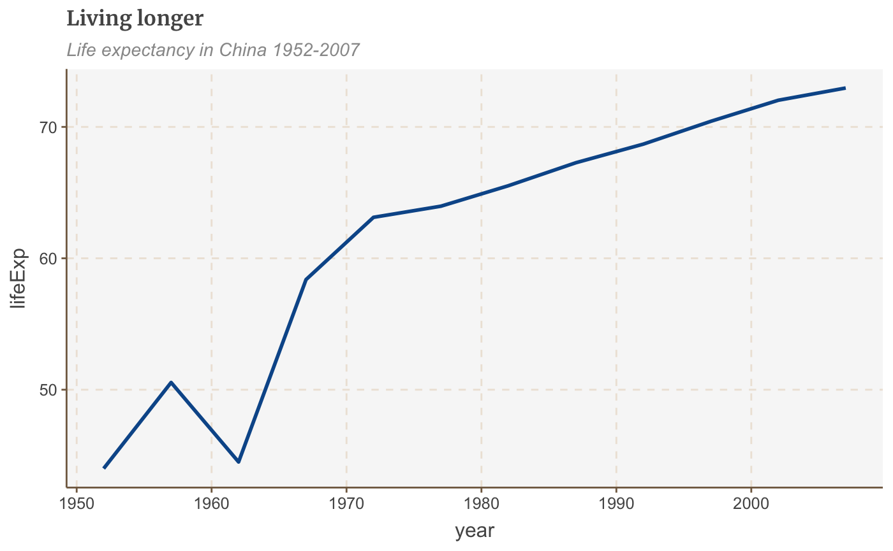
Make a multiple line chart
# Prepare data multiple_line_df <- gapminder %>% filter(country == "China" | country == "United States") # Make plot multiple_line <- ggplot(multiple_line_df, aes(x = year, y = lifeExp, colour = country)) + geom_line(size = 1) + labs(title="Living longer", subtitle = "Life expectancy in China and the US", x = "Year", y = "Life Expectancy") multiple_line
Make a bar chart
ggplot will normally add a space between the plot and the axis. This is normally fine, but with barplots especially it is recommended to remove this gap. This can be done with scale_y_continuous(expand = expand_scale(mult = c(0, .1))):
# Prepare data bar_df <- gapminder %>% filter(year == 2007 & continent == "Africa") %>% arrange(desc(lifeExp)) %>% head(5) # Make plot bars <- ggplot(bar_df, aes(x = country, y = lifeExp)) + geom_bar(stat="identity", position="identity") + labs(title="Reunion is highest", subtitle = "Highest African life expectancy, 2007", x = "Country", y = "Life Expectancy") + scale_y_continuous(expand = expand_scale(mult = c(0, .1)))
## Warning: `expand_scale()` is deprecated; use `expansion()` instead.bars ## Make a stacked bar chart
## Make a stacked bar chart
# Prepare data stacked_df <- gapminder %>% filter(year == 2007) %>% mutate(lifeExpGrouped = cut(lifeExp, breaks = c(0, 50, 65, 80, 90), labels = c("Under 50", "50-65", "65-80", "80+"))) %>% group_by(continent, lifeExpGrouped) %>% summarise(continentPop = sum(as.numeric(pop))) # set order of stacks by changing factor levels stacked_df$lifeExpGrouped = factor(stacked_df$lifeExpGrouped, levels = rev(levels(stacked_df$lifeExpGrouped))) # create plot stacked_bars <- ggplot(data = stacked_df, aes(x = continent, y = continentPop, fill = lifeExpGrouped)) + geom_bar(stat = "identity", position = "fill") + scale_y_continuous(labels = scales::percent) + labs(title = "How life expectancy varies", subtitle = "% of population by life expectancy band, 2007", x = "Continent", y = "Proportion", fill = "Life Expectancy Grouped") + scale_y_continuous(expand = expand_scale(mult = c(0, .1)))
## Warning: `expand_scale()` is deprecated; use `expansion()` instead.## Scale for 'y' is already present. Adding another scale for 'y', which will
## replace the existing scale.stacked_bars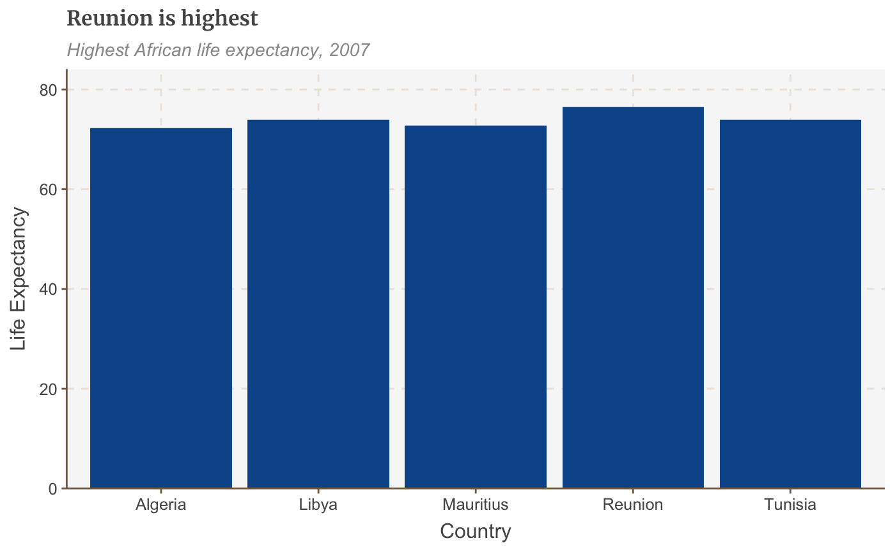
This example shows proportions, but you might want to make a stacked bar chart showing number values instead - this is easy to change! The value passed to the position argument will determine if your stacked chart shows proportions or actual values. position = "fill" will draw your stacks as proportions, and position = "identity" will draw number values.
Make a grouped bar chart
Making a grouped bar chart is very similar to making a bar chart. You just need to change position = "identity" to position = "dodge", and set the fill aesthetically instead:
# Prepare data grouped_bar_df <- gapminder %>% filter(year == 1967 | year == 2007) %>% select(country, year, lifeExp) %>% spread(year, lifeExp) %>% mutate(gap = `2007` - `1967`) %>% arrange(desc(gap)) %>% head(5) %>% gather(key = year, value = lifeExp, -country, -gap) # Make plot grouped_bars <- ggplot(grouped_bar_df, aes(x = country, y = lifeExp, fill = as.factor(year))) + geom_bar(stat="identity", position="dodge") + labs(title="We're living longer", subtitle = "Biggest life expectancy rise, 1967-2007", x = "Country", y = "Life Expectancy", fill = "Year") + scale_y_continuous(expand = expand_scale(mult = c(0, .1)))
## Warning: `expand_scale()` is deprecated; use `expansion()` instead.grouped_bars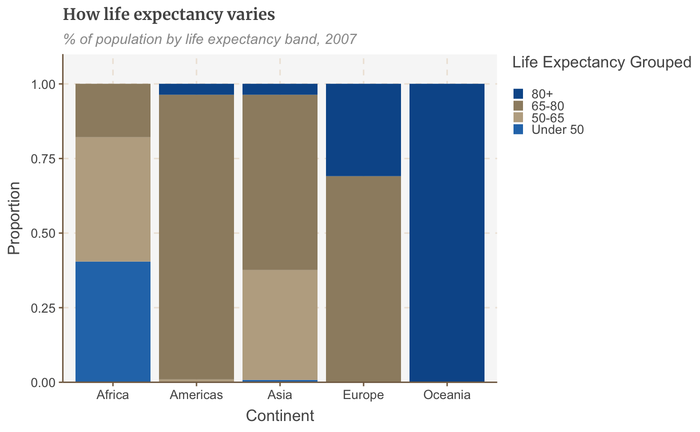 ## Make a dumbbell chart
Another way of showing difference is a dumbbell chart:
library(ggalt)
## Registered S3 methods overwritten by 'ggalt':
## method from
## grid.draw.absoluteGrob ggplot2
## grobHeight.absoluteGrob ggplot2
## grobWidth.absoluteGrob ggplot2
## grobX.absoluteGrob ggplot2
## grobY.absoluteGrob ggplot2# Prepare data dumbbell_df <- gapminder %>% filter(year == 1967 | year == 2007) %>% select(country, year, lifeExp) %>% spread(year, lifeExp) %>% mutate(gap = `2007` - `1967`) %>% arrange(desc(gap)) %>% head(10) # Make plot ggplot(dumbbell_df, aes(x = `1967`, xend = `2007`, y = reorder(country, gap), group = country)) + geom_dumbbell(colour = "#dddddd", size = 3, colour_x = "#FAAB18", colour_xend = "#1380A1") + labs(title="We're living longer", subtitle="Biggest life expectancy rise, 1967-2007", x = "Age", y = "Country")
Make a histogram
hist_df <- gapminder %>% filter(year == 2007) ggplot(hist_df, aes(lifeExp)) + geom_histogram(binwidth = 5, colour = "white") + scale_x_continuous(limits = c(35, 95), breaks = seq(40, 90, by = 10), labels = c("40", "50", "60", "70", "80", "90 years")) + labs(title = "How life expectancy varies", subtitle = "Distribution of life expectancy in 2007") + scale_y_continuous(expand = expand_scale(mult = c(0, .1)))
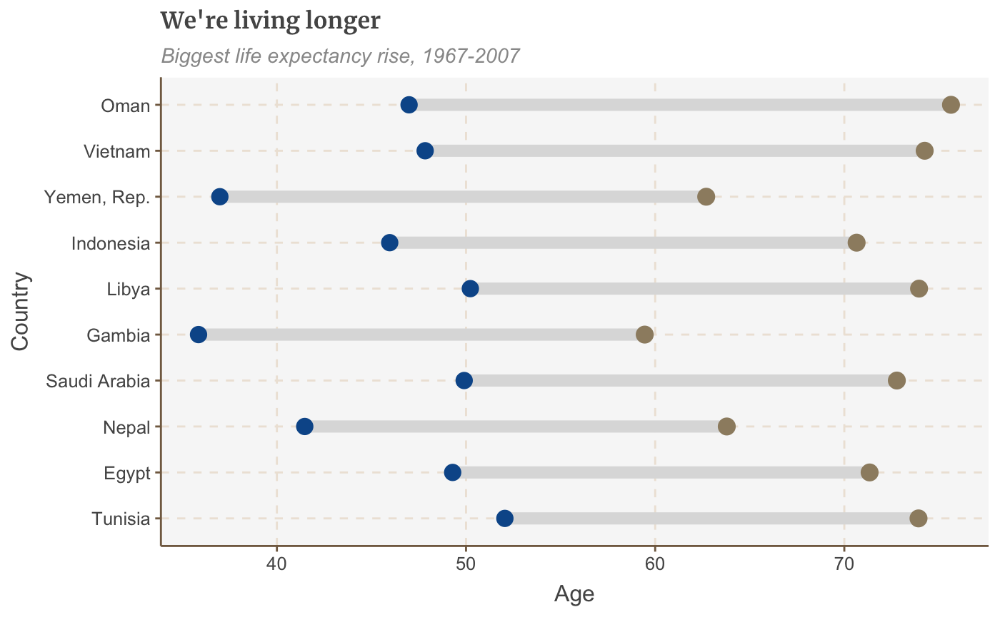
Tweaking Graphs
Remove the legend
Remove the legend to become one - it’s better to label data directly with text annotations.
Use guides(colour=FALSE) to remove the legend for a specific aesthetic (replace colour with the relevant aesthetic).
multiple_line + guides(colour=FALSE)
You can also remove all legends in one go using theme(legend.position = "none"):
multiple_line + theme(legend.position = "none")

Change the position of the legend
The legend’s default position is at the right of your plot. Move it to the left, right or bottom outside the plot with:
multiple_line + theme(legend.position = "top")
To be really precise about where we want our legend to go, instead of specifying “right” or “top” to change the general position of where the legend appears in our chart, we can give it specific coordinates.
For example legend.position=c(0.98,0.1) will move the legend to the bottom right. For reference, c(0,0) is bottom left, c(1,0) is bottom right, c(0,1) is top left and so on). Finding the exact position may involve some trial and error.
To check the exact position where the legend appears in your finalised plot you will have to check the file that is saved out after you run your finalise_plot() function, as the position will be relevant to the dimensions of the plot.
multiple_line + theme(legend.position = c(0.115,1.05), legend.direction = "horizontal") + labs(title="Living longer", subtitle = "Life expectancy in China and the US\n")
To get the legend flush against the left side of your chart, it may be easier to set a negative left margin for the legend using legend.margin. The syntax is margin(top, right, bottom, left).
You’ll have to experiment to find the correct number to set the margin to for your chart - save it out with finalise_plot() and see how it looks.
+ theme(legend.margin = margin(0, 0, 0, -200))
Remove the legend title
Remove the legend title by tweaking your theme():
+ theme(legend.title = element_blank())
Reverse the order of your legend
Sometimes you need to change the order of your legend for it to match the order of your bars. For this, you need guides:
+ guides(fill = guide_legend(reverse = TRUE))
Rearrange the layout of your legend
If you’ve got many values in your legend, you may need to rearrange the layout for aesthetic reasons.
You can specify the number of rows you want your legend to have as an argument to guides. The below code snippet, for instance, will create a legend with 4 rows:
+ guides(fill = guide_legend(nrow = 4, byrow = T))
You may need to change fill in the code above to whatever aesthetic your legend is describing, e.g. size, colour, etc.
Change the appearance of your legend symbols
You can override the default appearance of the legend symbols, without changing the way they appear in the plot, by adding the argument override.aes to guides.
The below will make the size of the legend symbols larger, for instance:
+ guides(fill = guide_legend(override.aes = list(size = 4))))
Add space between your legend labels
The default ggplot legend has almost no space between individual legend items. Not ideal.
You can add space by changing the scale labels manually.
For instance, if you have set the colour of your geoms to be dependent on your data, you will get a legend for the colour, and you can tweak the exact labels to get some extra space in by using the below snippet:
+ scale_colour_manual(labels = function(x) paste0(" ", x, " "))
If your legend is showing something different, you will need to change the code accordingly. For instance, for fill, you will need scale_fill_manual() instead.
Make changes to the axes
Flip the coordinates of a plot
Add coord_flip() to make your vertical bars horizontal:
bars <- bars + coord_flip() + scale_y_continuous(expand = expand_scale(mult = c(0, .1))) + scale_x_discrete()
## Warning: `expand_scale()` is deprecated; use `expansion()` instead.## Scale for 'y' is already present. Adding another scale for 'y', which will
## replace the existing scale.bars
Add/remove gridlines
The default theme only has gridlines for the y axis. Add x gridlines with panel.grid.major.x = element_line.
(Similarly, remove the gridlines on the y axis with panel.grid.major.y=element_blank())
bars <- bars + coord_flip() + theme(panel.grid.major.x = element_line(color="#cbcbcb"), panel.grid.major.y=element_blank())
## Coordinate system already present. Adding new coordinate system, which will replace the existing one.barsChange the axis text manually
You can change the axis text labels freely with scale_y_continuous or scale_x_continuous:
bars <- bars + scale_y_continuous(limits=c(0,85), breaks = seq(0, 80, by = 20), labels = c("0","20", "40", "60", "80 years"))
## Scale for 'y' is already present. Adding another scale for 'y', which will
## replace the existing scale.barsThis will also specify the limits of your plot as well as where you want axis ticks.
Add thousand separators to your axis labels
You can specify that you want your axis text to have thousand separators with an argument to scale_y_continuous.
There are two ways of doing this, one in base R which is a bit fiddly:
+ scale_y_continuous(labels = function(x) format(x, big.mark = ",", scientific = FALSE))
The second way relies on the scales package, but is much more concise:
+ scale_y_continuous(labels = scales::comma)
Add percent symbol to your axis labels
This is also easy to add with an argument to scale_y_continuous:
+ scale_y_continuous(labels = function(x) paste0(x, "%"))
Change the plot limits
The long way of setting the limits of your plot explicitly is with scale_y_continuous as above. But if you don’t need to specify the breaks or labels the shorthand way of doing it is with xlim or ylim:
## Scale for 'y' is already present. Adding another scale for 'y', which will
## replace the existing scale.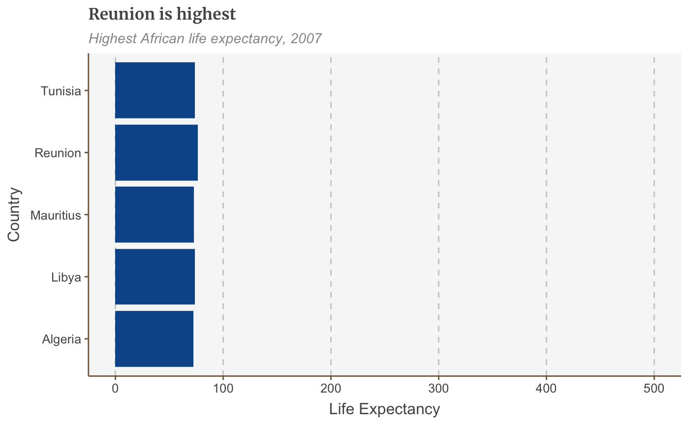
Add axis titles
Our default theme has no axis titles, but you may wish to add them in manually. This is done by modifying theme():
+ theme(axis.title = element_text(size = 18))
Modify axis titles
If you add in axis titles, they will by default be the column names in your dataset. You can change this to anything you want in your call to labs().
For instance, if you wish your x axis title to be “I’m an axis” and your y axis label to be blank, this would be the format:
+ labs(x = "I'm an axis", y = "")
Add annotations
Add an annotation
The easiest way to add a text annotation to your plot is using geom_label:
multiple_line + geom_label(aes(x = 1980, y = 45, label = "I'm an annotation!"), hjust = 0, vjust = 0.5, colour = "#555555", fill = "white", label.size = NA, family="Merriweather", size = 6)

The exact positioning of the annotation will depend on the x and y arguments (which is a bit fiddly!) and the text alignment, using hjust and vjust - but more on that below.
Add line breaks where necessary in your label with \n, and set the line height with lineheight.
multiple_line <- multiple_line + geom_label(aes(x = 1980, y = 45, label = "I'm quite a long\nannotation over\nthree rows"), hjust = 0, vjust = 0.5, lineheight = 0.8, colour = "#555555", fill = "white", label.size = NA, family="Merriweather", size = 6)
Let’s get our direct labels in there!
multiple_line <- multiple_line + theme(legend.position = "none") + xlim(c(1950, 2011)) + geom_label(aes(x = 2007, y = 79, label = "US"), hjust = 0, vjust = 0.5, colour = "#1380A1", fill = NA, label.size = NA, size = 6) + geom_label(aes(x = 2007, y = 72, label = "China"), hjust = 0, vjust = 0.5, colour = "#FAAB18", fill = NA, label.size = NA, size = 6) plot(multiple_line)

Left-align/right-align text
The arguments hjust and vjust dictate horizontal and vertical text alignment. They can have a value between 0 and 1, where 0 is left-justified and 1 is right-justified (or bottom- and top-justified for vertical alignment).
Add labels based on your data
The above method for adding annotations to your chart lets you specify the x and y coordinates exactly. This is very useful if we want to add a text annotation in a specific place, but would be very tedious to repeat.
Fortunately, if you want to add labels to all your data points, you can simply set the position based on your data instead.
Let’s say we want to add data labels to our bar chart:
labelled.bars <- bars + geom_label(aes(x = country, y = lifeExp, label = round(lifeExp, 0)), hjust = 1, vjust = 0.5, colour = "white", fill = NA, label.size = NA, family="Merriweather", size = 6) labelled.bars
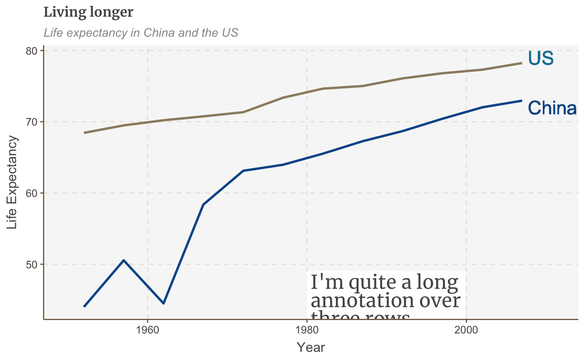
The above code automatically adds one text label for each continent, without us having to add geom_label five separate times.
(If you’re confused about why we’re setting the x as the continents and y as life expectancy, when the chart appears to be drawing them the other way around, it’s because we’ve flipped the coordinates of the plot using coord_flip(), which you can read more about here.)
Add left-aligned labels to bar charts
If you’d rather add left-aligned labels for your bars, just set the x argument based on your data, but specify the y argument directly instead, with a numeric value.
The exact value of y will depend on the range of your data.
labelled.bars.v2 <- bars + geom_label(aes(x = country, y = 4, label = round(lifeExp, 0)), hjust = 0, vjust = 0.5, colour = "white", fill = NA, label.size = NA, family="Merriweather", size = 6) labelled.bars.v2
Add a line
Add a line with geom_segment:
multiple_line + geom_segment(aes(x = 1979, y = 45, xend = 1965, yend = 43), colour = "#555555", size=0.5)
The size argument specifies the thickness of the line.
Add a curved line
For a curved line, use geom_curve instead of geom_segment:
multiple_line + geom_curve(aes(x = 1979, y = 45, xend = 1965, yend = 43), colour = "#555555", curvature = -0.2, size=0.5)
The curvature argument sets the amount of curve: 0 is a straight line, negative values give a left-hand curve and positive values give a right-hand curve.
Add an arrow
Turning a line into an arrow is fairly straightforward: just add the arrow argument to your geom_segment or geom_curve:
multiple_line + geom_curve(aes(x = 1979, y = 45, xend = 1965, yend = 43), colour = "#555555", size=0.5, curvature = -0.2, arrow = arrow(length = unit(0.03, "npc")))
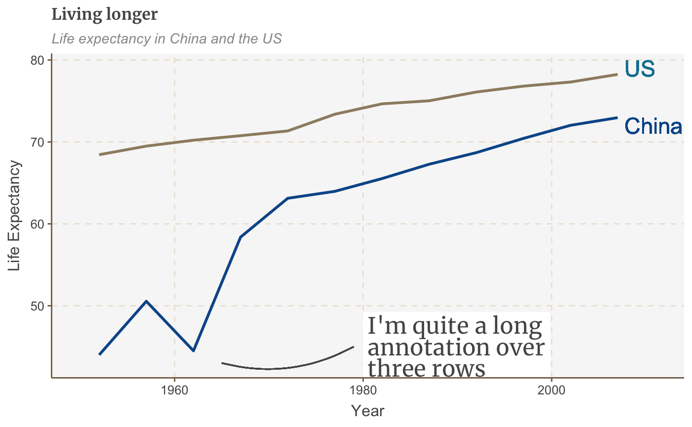
The first argument to unit sets the size of the arrowhead.
Add a line across the whole plot
The easiest way to add a line across the whole plot is with geom_vline(), for a vertical line, or geom_hline(), for a horizontal one.
Optional additional arguments allow you to specify the size, colour and type of line (the default option is a solid one).
multiple_line + geom_hline(yintercept = 10, size = 1, colour = "red", linetype = "dashed")
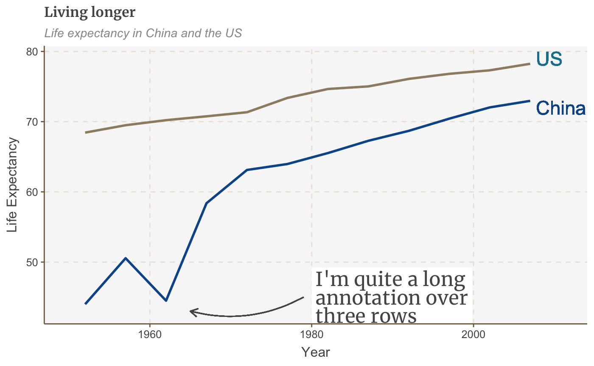
The line obviously doesn’t add much in this example, but this is useful if you want to highlight something, e.g. a threshold level, or an average value.
It’s also especially useful because our design style - as you may already have noticed from the charts on this page - is to add a vertical or horizontal baseline to our charts. This is the code to use:
+ geom_hline(yintercept = 0, size = 1, colour = "#333333")
Work with small multiples
Small multiple charts are easy to create with ggplot: it’s called faceting.
Facets
If you have data that you want to visualise split up by some variable, you need to use facet_wrap or facet_grid.
Add the variable you want to divide by to this line of code: facet_wrap( ~ variable).
An additional argument to facet wrap, ncol, allows you to specify the number of columns:
#Prepare data facet <- gapminder %>% filter(continent != "Americas") %>% group_by(continent, year) %>% summarise(pop = sum(as.numeric(pop))) #Make plot facet_plot <- ggplot() + geom_area(data = facet, aes(x = year, y = pop, fill = continent)) + facet_wrap( ~ continent, ncol = 5) + scale_y_continuous(breaks = c(0, 2000000000, 4000000000), labels = c(0, "2bn", "4bn")) + theme(legend.position = "none", axis.text.x = element_blank()) + labs(title = "Asia's rapid growth", subtitle = "Population growth by continent, 1952-2007") facet_plot
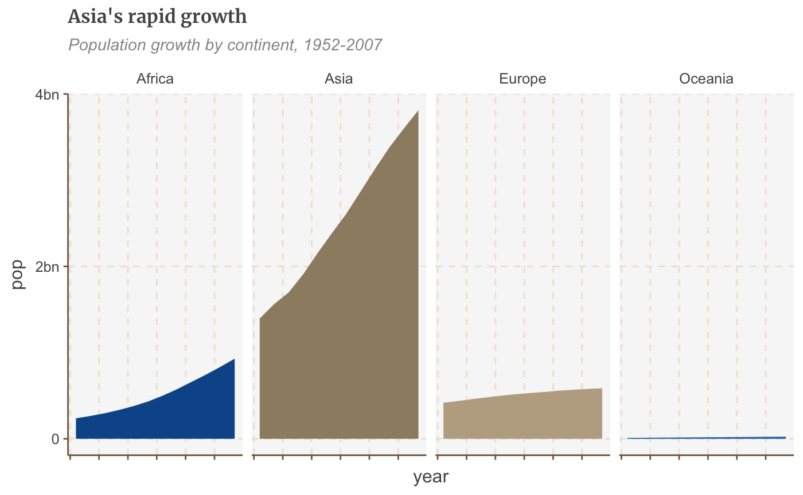
Free scales
You may have noticed in the chart above that Oceania, with its relatively small population, has disappeared completely.
By default, faceting uses fixed axis scales across the small multiples. It’s always best to use the same y axis scale across small multiples, to avoid misleading, but sometimes you may need to set these independently for each multiple, which we can do by adding the argument scales = "free".
If you just want to free the scales for one axis set the argument to free_x or free_y.
#Make plot facet_plot_free <- ggplot() + geom_area(data = facet, aes(x = year, y = pop, fill = continent)) + facet_wrap(~ continent, scales = "free") + geom_hline(yintercept = 0, size = 1, colour = "#333333") + theme(legend.position = "none", axis.text.x = element_blank(), axis.text.y = element_blank()) + labs(title = "It's all relative", subtitle = "Relative population growth by continent,1952-2007") facet_plot_free

Do something else entirely
Increase or decrease margins
You can change the margin around almost any element of your plot - the title, subtitles, legend - or the plot itself.
You shouldn’t ordinarily need to change the default margins from the theme but if you do, the syntax is theme(ELEMENT=element_text(margin=margin(0, 5, 10, 0))).
The numbers specify the top, right, bottom, and left margin respectively - but you can also specify directly which margin you want to change. For example, let’s try giving the subtitle an extra-large bottom margin:
bars + theme(plot.subtitle=element_text(margin=margin(b=75)))
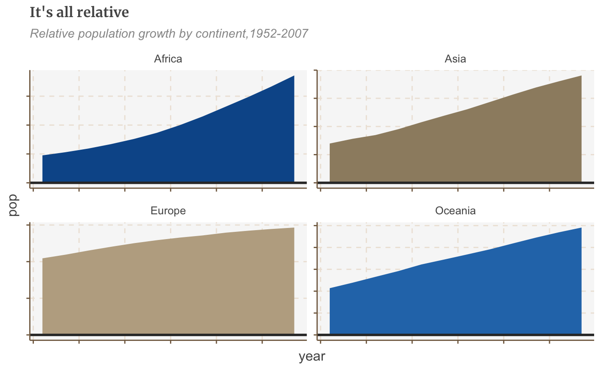
Hm… maybe not.
Exporting your plot and x-axis margins
You do need to think about your x-axis margin sizes when you are producing a plot that is beyond the default height in bbplot, which is 450px. This could be the case for example if you are creating a bar chart with lots of bars and want to make sure there is some breathing space between each bar and labels. If you do leave the margins as they are for plots with a greater height, then you could get a larger gap between the axis and your labels.
Here is a guide that we work to when it comes to the margins and the height of your bar chart (with coord_flip applied to it):
| size | t | b |
|---|---|---|
| 550px | 5 | 10 |
| 650px | 7 | 10 |
| 750px | 10 | 10 |
| 850px | 14 | 10 |
So what you’d need to do is add this code to your chart if for example you wanted the height of your plot to be 650px instead of 450px.
bar_chart_tall <- bars + theme(axis.text.x = element_text(margin=margin(t = 7, b = 10))) bar_chart_tall
Although it is much less likely, but if you do want to do the equivalent for a line chart and export it at a larger than default height, you need to do the same but change your values for t to negative values based on the table above.
Reorder bars by size
By default, R will display your data in alphabetical order, but arranging it by size instead is simple: just wrap reorder() around the x or y variable you want to rearrange, and specify which variable you want to reorder it by.
E.g. x = reorder(country, pop). Ascending order is the default, but you can change it to descending by wrapping desc() around the variable you’re ordering by:
bars <- ggplot(bar_df, aes(x = reorder(country, lifeExp), y = lifeExp)) + geom_bar(stat="identity", position="identity") + coord_flip() + labs(title="Reunion is highest", subtitle = "Highest African life expectancy, 2007") + theme(panel.grid.major.x = element_line(color="#cbcbcb"), panel.grid.major.y=element_blank()) plot(bars)
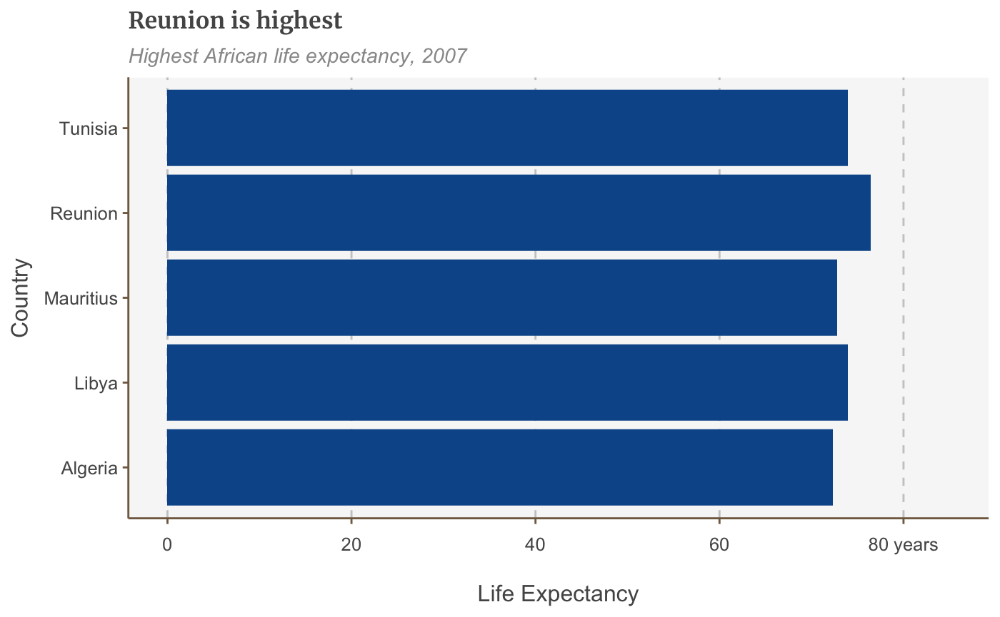
Reorder bars manually
Sometimes you need to order your data in a way that isn’t alphabetical or reordered by size.
To order these correctly you need to set your data’s factor levels before making the plot.
Specify the order you want the categories to be plotted in the levels argument:
You can also use this to reorder the stacks of a stacked bar chart.
Colour bars conditionally
You can set aesthetic values like fill, alpha, size conditionally with ifelse().
The syntax is fill=ifelse(logical_condition, fill_if_true, fill_if_false).
ggplot(bar_df, aes(x = reorder(country, lifeExp), y = lifeExp)) + geom_bar(stat="identity", position="identity", fill=ifelse(bar_df$country == "Mauritius", "#1380A1", "#dddddd")) + coord_flip() + labs(title="Reunion is highest", subtitle = "Highest African life expectancy, 2007") + theme(panel.grid.major.x = element_line(color="#cbcbcb"), panel.grid.major.y=element_blank())
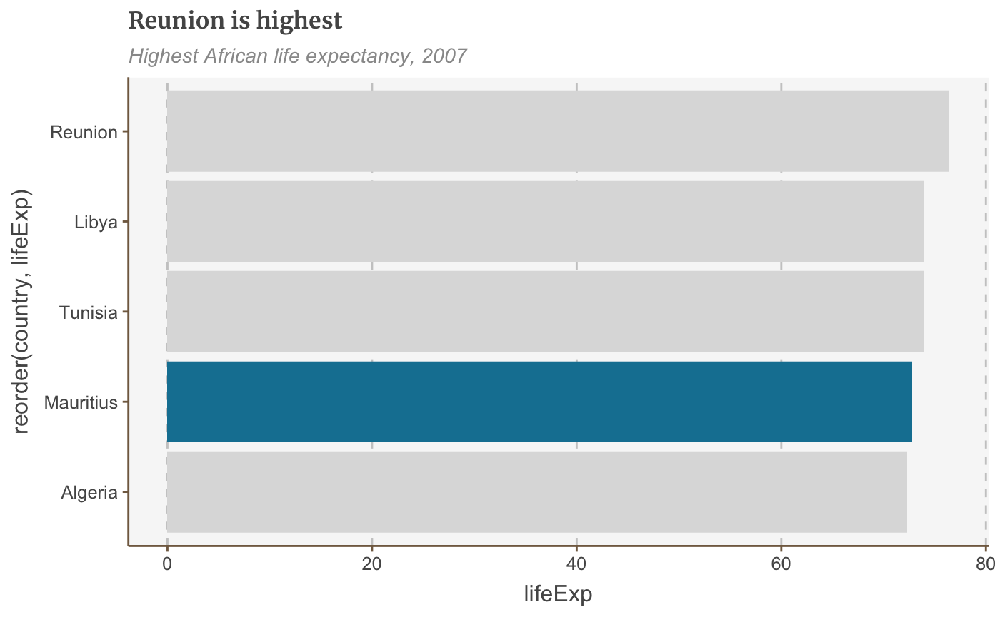